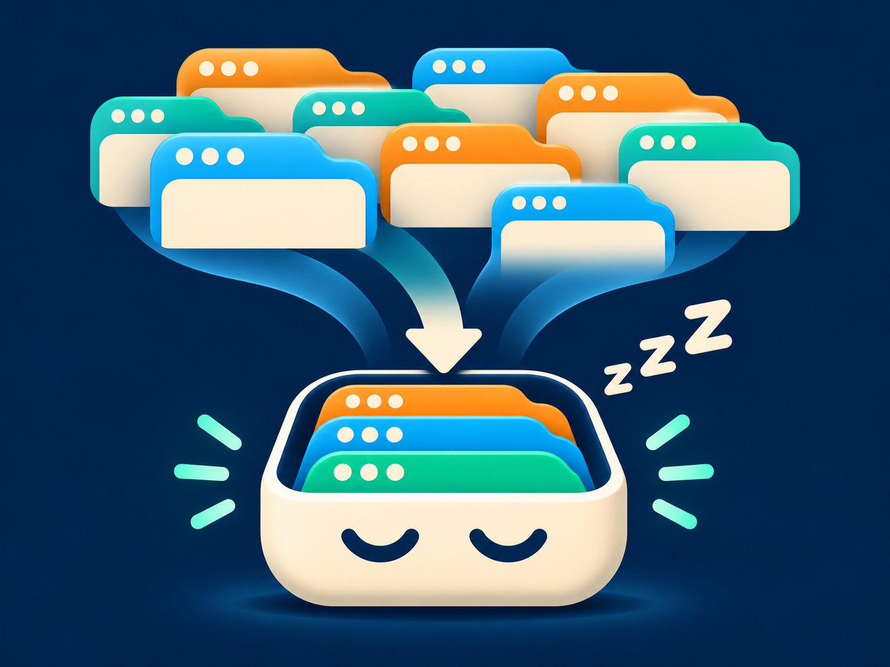

Memory relief without losing your place
Hibernate your tabs. Save your memory.
HTWS records every restorable detail locally, then closes your tabs your browser can release their live page resources. Restore a tab, a window, or your full workspace when you are ready.

01
Save first, then close
Hibernation stores the restore record before the live tab is closed.
02
Return to the same structure
Restore tabs, windows, sessions, groups, pins, and active state.
03
Keep the record local
No account or analytics. Protection rules keep excluded tabs open.